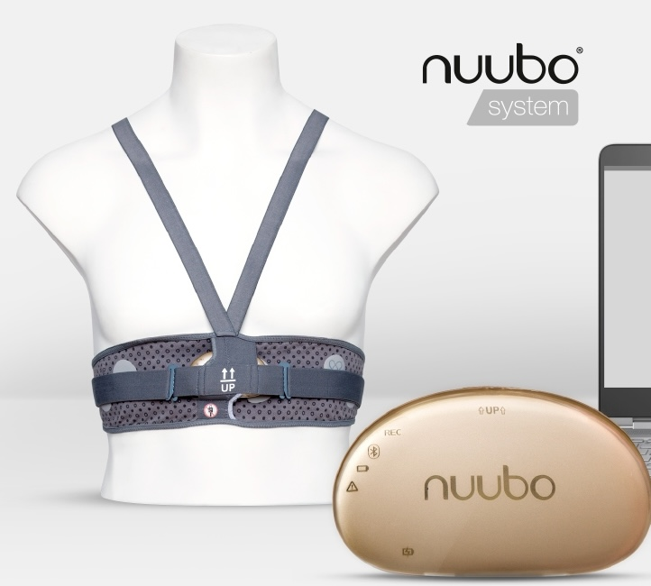
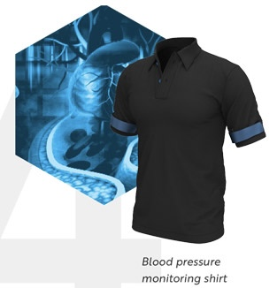

Smart Clothing in Healthcare
How is smart clothing used in the medical field?
Smart garments are still in their infancy and are not used in the majority of hospitals. This is because the medical field as well as many medical manufacturers are not willing to invest in smart clothing. However there is interest in the potential of smart clothing and the impact they can have on the medical field. In many clinical trials smart garments have shown to help sense the state of the wearer's health, as well as help prevent, treat and manage health. The rise of medical smart clothing can lead to data-driven medicine. Smart shirts can be used to study patients remotely which can save both money and time.
Types of Wearables:
| Patient Gowns: |  | Patient gowns and caps are one of the many things in the medical field that smart clothing can change. Sensors embedded into patient gowns can help collect data without the patient having to be connected to multiple machines. This includes gowns that take the temperature, heart rate, blood pressure and other vitals. This data is then sent to a computer so that medical professionals can view it. Currently a wearable medical device company called Nuubo has come up with a garment-based ECG monitor that helps and tracks data of patients in cardiac rehab. |
|---|---|---|
| Patient Gloves: |  |
Just like how sensors can be embedded into gowns they can also be embedded into fitted caps. These caps can then provide data on brain functions and assist those who have neurological conditions. Another way that wearable technology can change the medical world is smart gloves. These gloves can help relieve pain for those with arthritis and other ANA diseases. These gloves can reduce pain through electrical stimulation and compression. Recently Quantic Nanotech released QNanotech gloves that can provide heat to joins, as well as vibrations to help relieve pain. |
| Everyday Apparel: |  | Everyday smart clothing can be used to monitor and treat health conditions outside of hospitals and clinics. Smart clothing such as smart shirts, jackets, pants and more can help monitor vitals such as, blood pressure and heart rate for patients that are more prone to heart like diseases such as heart attacks. An example of everyday clothing that can help monitor patients in their own home, is activewear that helps monitor heart rate and blood pressure. Myrant is a tech company that has created a blood pressure shirt called SKIIN. This shirt is washable and allows up to 24/7 continuous data tracking. This is great for patients since it removes the need to go to the doctor’s office. |
Improving the Medical Field:
Smart clothing can not only help medical staff with everyday things such as measuring vitals, but it is also cost efficient and can save time. Since smart clothing is portable it means that patients do not have to travel to the doctors office, to have their vitals done. Smart clothing does this for them and then sends it to computers for doctors to then analyze. Smart clothing is also quite cost efficient. Smart wearables can potentially eliminate the need for expensive equipment reducing costs for hospitals. Not only can smart clothing cut costs for hospitals but it can also cut costs for patients because in many cases they may not need to enter medical hospitals. Smart clothing is also more patient-friendly making it so that patients can stay in the comfort of their own homes while still being monitored.
Overall:
Overall smart clothing can tremendously help both patients and medical staff. Smart clothing can not only help cut down the cost for hospitals but it can also cut down the cost for patients. Smart garments can also help patient comfort by letting them be monitored at home. In addition to this, smart clothing can help make hospitals a more comfortable environment for patients because they would not be monitored using wires and machines but rather be monitored through comfortable clothing.